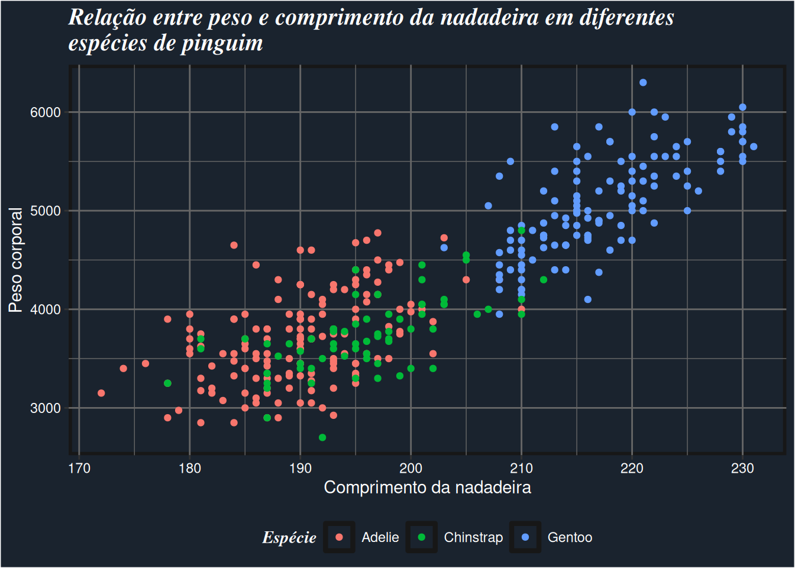
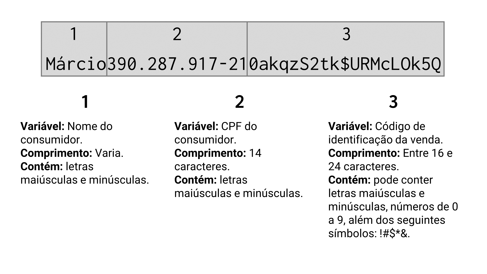
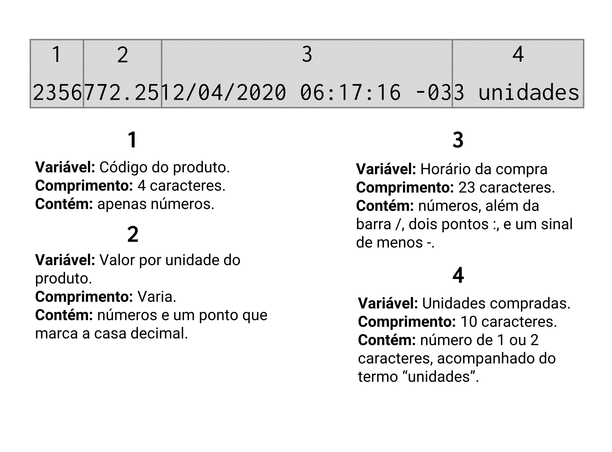

conj <- c(290, 34, 512, 54, 89, 10)Exercícios
Capítulo 1 - Noções Básicas do R
Questão 1.1. Tente calcular algumas operações básicas:
1.1.A) Qual é a soma entre 32397 e 55405?
1.1.B) Calcule a soma total do conjunto de valores dispostos no vetor conj abaixo.
1.1.C) Considerando que, \(y = 3x^3 - 12x^2 + \frac{1}{15}x+ 25\), calcule o valor de \(y\) quando \(x\) é igual a 5.
Questão 1.2. Em cada item abaixo, temos uma mensagem de erro específica que supostamente apareceu em seu console. Tente explicar como ou porque essas mensagens podem aparecer em seu console. Em outras palavras, tente explicar o que essas mensagens significam, e qual foi o fato ocorrido que gerou esses erros:
1.2.A) Erro: objeto 'logica' não encontrado.
1.2.B) Error in bind_rows() : não foi possível encontrar a função "bind_rows"
1.2.C) Error in library(dplyr) : there is no package called ‘dplyr’
Questão 1.3. As próximas questões vão implicitamente esperar que você utilize algumas dessas funções: sum(), mean(), abs() e sd(). Claro que, o R te oferece a liberdade de escrever as suas próprias funções, ou de desenhar o seu próprio caminho até as soluções dessas questões. Portanto, não se preocupe se você encontrar uma solução para as questões abaixo, que não incluem o uso dessas funções específicas.
1.3.A) Considerando que a variável \(X\) segue uma distribuição normal, como você normalizaria (isto é, calcular o índice \(Z\) da distribuição) os valores presentes no vetor vec abaixo, que contém uma amostra de valores da variável \(X\).
vec <- c(0.5, 1.2, 2.5, 1.3, 2.2, 3.7)1.3.B) Utilizando novamente a variável vec, calcule o seu desvio médio.
vec <- c(0.5, 1.2, 2.5, 1.3, 2.2, 3.7)Capítulo 2 - Fundamentos do R
Questão 2.1. Em cada item desta questão, temos um simples print() de um objeto qualquer. Com base apenas nessa primeira imagem do objeto, tente identificar a estrutura (vetor, matriz, lista, data.frame) na qual esse objeto se encontra:
2.1.A) Objeto 1:
[[1]]
[1] 1 2 3 4 5 6 7 8 9 10 11 12 13 14 152.1.B) Objeto 2:
[1] 1 2 3 4 5 6 7 8 9 102.1.C) Objeto 3:
[,1] [,2] [,3] [,4] [,5]
[1,] "MG" "MG" "DF" "SP" "MG"
[2,] "MS" "DF" "DF" "SP" "DF"
[3,] "DF" "DF" "MG" "SP" "MG"
[4,] "MG" "SP" "MG" "SP" "MG"
[5,] "SP" "SP" "MG" "DF" "MG"2.1.D) Objeto 4:
id valor
1 1 -0.29
2 2 -0.30
3 3 -0.41
4 4 0.25
5 5 -0.89
6 6 0.44
7 7 -1.24
8 8 -0.22
9 9 0.38
10 10 0.132.1.E) Objeto 5:
$estado
[1] "MG"
$cidade
[1] "Belo Horizonte"
$n_municipios
[1] 853
$regiao
[1] "Sudeste"2.1.F) Objeto 6:
[1] NA NA NA NA NA NA NA NA NA NA NA NA NA NA NA NA NA NA NA NAQuestão 2.2. Em cada item abaixo, você deve criar um teste lógico que seja capaz de testar as condições postas no enunciado. Em alguns itens, será fornecido o código necessário para que você crie certos objetos (como v_seq, v_rep, lst, etc.), pois os testes lógicos se baseiam nesses objetos, ou devem ser aplicados diretamente sobre esses objetos. Portanto, lembre-se de copiar o código fornecido pela questão, colar em seu console, e apertar Enter para recriar esses objetos em sua sessão do R.
2.2.A) Crie um teste lógico que seja capaz de identificar quais dos cinco objetos abaixo, são um vetor atômico.
v_seq <- 10:25
v_rep <- rep("abc", times = 30)
lst <- list(1:10)
mt <- matrix(1:20, nrow = 4, ncol = 5)
dt <- data.frame(15, "A", 1:10)2.2.B) Imagine que você receba em sua sessão do R, o objeto lst abaixo. Tente criar um teste lógico que possa confirmar se esse objeto é uma lista. Pelo código abaixo, você já sabe que este objeto é sim uma lista. Entretanto, nem sempre você terá acesso fácil ao código que criou certo objeto, ou, nem sempre você consegue prever que tipos de objetos serão criados a partir dos comandos escritos por outras pessoas. Por isso, quando você não conhece o input que você vai receber, é sempre importante se basear em teste lógicos que possam lhe assegurar que os seus objetos estão na estrutura desejada.
lst <- list(
estado = "MG",
cidade = "Belo Horizonte",
n_municipios = 853,
regiao = "Sudeste"
)2.2.C) Utilizando a mesma lista lst do exercício acima, crie um teste lógico capaz de identificar se essa lista possui um item chamado “estado”. Primeiro, aplique o seu teste lógico sobre lst, e confira se o resultado do teste é TRUE. Em seguida, aplique esse mesmo teste lógico sobre a lista lst_sem_estado abaixo, e veja se o resultado do teste é de fato FALSE.
lst_sem_estado <- list(
regiao = "Sudeste",
n_municipios = 853
)2.2.D) Suponha que você possua a tabela tab abaixo. Crie um teste lógico que possa identificar se a coluna total é do tipo double.
tab <- data.frame(
unidade = c("Centro", "Gameleira", "Santa Efigênia", "Centro",
"Barro Preto", "Centro", "Gameleira", "Centro",
"Barro Preto", "Santa Efigênia"),
mes = c(1, 1, 1, 2, 2, 3, 3, 4, 4, 4),
vendas = c(1502, 1430, 1100, 1200, 1443, 1621, 1854, 2200,
1129, 1872),
total = c(5362.14, 5105.1, 3927, 4284, 5151.51, 5786.97,
6618.78, 7854, 4030.53, 6683.04)
)2.2.E) Utilizando a mesma tabela tab acima, crie um teste lógico que possa identificar se a tabela possui exatamente 10 linhas, E, se essa tabela possui uma coluna chamada “vendas”, E, se a 3° coluna da tabela é do tipo character. Perceba no enunciado desta questão, os E’s separando cada condição a ser testada. Esses E’s estão indicando que essas condições são dependentes, ou, em outras palavras, elas precisam ser satisfeitas ao mesmo tempo.
2.2.F) Se eu te der um número qualquer, referente a um ano específico (por exemplo, 2005 ou 1997), crie um teste lógico capaz de atestar se esse ano fornecido é um ano bissexto. Um ano bissexto é definido pelas seguintes condições: 1) a cada 4 anos, temos um ano bissexto; 2) a cada 100 anos, nós não devemos ter um ano bissexto; 3) a cada 400 anos temos um ano bissexto. Um detalhe: as últimas regras são mais importantes do que as primeiras, ou seja, a regra 3 prevalece sobre as regras 1 e 2, da mesma forma que a regra 2, prevalece sobre a regra 1. Caso essas definições não estejam muito claras, elas basicamente significam o seguinte: 1) o ano deve ser múltiplo de 4; 2) o ano não deve ser múltiplo de 100 a não ser que ele seja múltiplo de 400; 3) se o ano é múltiplo de 400, ele é obrigatoriamente um ano bissexto.
Questão 2.3. Em cada item abaixo, fornecemos um vetor formado pela função c(). Perceba que em cada um desses vetores, valores de diferentes tipos são misturados. Como definimos na seção Coerção no R, quando dados de diferentes tipos são colocados dentro de um vetor atômico, o R automaticamente realiza um processo de coerção, ao converter todos esses dados para um único tipo. O seu objetivo nessa questão é simplesmente adivinhar o tipo (double, integer, logical, ou character) de dado, para o qual esses dados serão convertidos. Caso esteja na dúvida, basta copiar e colar o código em seu console que você terá uma visão do resultado.
2.3.A)
c(1.2, 2.4, "3.1", 1.9)2.3.B)
integers <- 1:3
doubles <- c(2.23, 9.87, 3.2)
c(integers, doubles)2.3.C)
c(1.56, 3L, 1L, 5L, 2.32, 9.87)2.3.D)
c(TRUE, 1.5, FALSE)2.3.E)
c("p", "b", "c", TRUE, 2L, 4.318)Questão 2.4. Os próximos exercícios serão voltados para subsetting. Ao longo desses exercícios, estaremos utilizando o data.frame flights, que provêm do pacote nycflights13. Por isso, lembre-se que para ter acesso a essa tabela, é necessário que você chame por esse pacote em sua sessão, com o comando library(). Caso você não tenha o pacote instalado em sua máquina, execute o comando install.packages() mostrado abaixo.
### Caso você não possua o pacote nycflights13
### instalado, execute o comando:
### install.packages("nycflights13")
library(nycflights13)
### Após o comando library() você
### terá acesso à tabela flights
flights2.4.A) Encontre todas as linhas da tabela flights em que carrier seja igual a "B6", e que month seja igual a 5.
2.4.B) Todos os voos descritos na tabela flights, correspondem a voos que ocorreram no aeroporto de Nova York, ao longo do ano de 2013. A coluna dep_delay apresenta o tempo de atraso (em minutos) no momento de partida do aeroporto, e a coluna arr_delay apresenta o tempo de atraso (em minutos) no momento de chegada ao aeroporto. Tendo isso em mente, no ano de 2013, quantos voos obtiveram um tempo de atraso total acima do tempo médio de atraso?
2.4.C) Selecione as linhas da tabela flights que se encaixam em pelo menos uma dessas duas condições: 1) possuem um arr_delay abaixo de 2 minutos, e que o aeroporto de destino (dest) seja "BOS"; 2) cujo horário de partida programado (sched_dep_time) seja de 6:00 (ou 600), e que o mês de ocorrência do voô seja igual a 1.
Capítulo 4 - Importando e exportando dados com readr, readxl e haven
Lembre-se que, um arquivo de texto, nada mais é do que um arquivo simples contendo um conjunto de textos. Esses textos são organizados em linhas (onde cada linha representa uma observação diferente), e em cada linha desse arquivo, esses textos são separados em diferentes colunas, através de algum caractere especial, como vírgulas (
,), ou pontos e vírgulas (;).
Questão 4.1. Como descrevemos ao longo desse capítulo, arquivos de texto são talvez o principal formato de arquivo utilizado hoje para o compartilhamento de dados. Por isso, os próximos exercícios buscam reforçar os conhecimentos a respeito desses arquivos.
4.1.A) Considerando o arquivo de texto contido no objeto t abaixo, qual é o caractere especial que define as colunas desse arquivo? Dado que você tenha identificado esse caractere especial, quais comandos você utilizaria para ler esse arquivo?
t <- "
ID~Valor/Grupo~Unidade
1~2,5488/Marketing~Kg
2~4,0101/Análise~Kg
3~1097/Vendas~g
4~12,76/Logísitica~Kg"4.1.B) Perceba abaixo, que os objetos pac1 e pac2 são praticamente iguais. Perceba também, que estamos utilizando os mesmos comandos de importação para ambos os objetos. Porém, os resultados gerados pela função são diferentes em cada objeto. Tente identificar o que está causando essa diferença. Dado que você tenha identificado a fonte de tal diferença, como você ajustaria os comandos aplicados sobre cada objeto, de forma que os seus resultados sejam exatamente iguais?
pac1 <- "Setor;Produção;Receita;Gasto em P&D
Produtos alimentícios;10828,37;199907,55;3358,36
Bebidas;759,53;28093,21;
Produtos do fumo;69,99;8863,5;121,35
Produtos têxteis;4153,97;25804,16;746,83
Produtos de madeira;5088,78;15320,69;279,54
Celulose e outras pastas;26,95;4245,19;216,7
Refino de petróleo;75,48;114316,31;1550,73
Produtos químicos;3179,52;133582,8;2914,09
Produtos farmacêuticos;621,82;24972,07;1038,73"
pac2 <- "Setor;Produção;Receita;Gasto em P&D
Produtos alimentícios;10.828,37;199907,55;3358,36
Bebidas;759,53;28093,21;x
Produtos do fumo;69,99;8863,5;121,35
Produtos têxteis;4.153,97;25804,16;746,83
Produtos de madeira;5.088,78;15320,69;279,54
Celulose e outras pastas;26,95;4245,19;216,7
Refino de petróleo;75,48;114316,31;1550,73
Produtos químicos;3.179,52;133582,8;2914,09
Produtos farmacêuticos;621,82;24972,07;1038,73"
readr::read_delim(pac1, delim = ";")## Rows: 9 Columns: 4
## -- Column specification ----------------------------------------
## Delimiter: ";"
## chr (1): Setor
##
## i Use `spec()` to retrieve the full column specification for this data.
## i Specify the column types or set `show_col_types = FALSE` to quiet
## this message.
## # A tibble: 9 x 4
## Setor `Produ\xe7\xe3o` Receita `Gasto em P&D`
## <chr> <dbl> <dbl> <dbl>
## 1 "Produtos aliment\xedcios" 1082837 19990755 335836
## 2 "Bebidas" 75953 2809321 NA
## 3 "Produtos do fumo" 6999 88635 12135
## 4 "Produtos t\xeaxteis" 415397 2580416 74683
## 5 "Produtos de madeira" 508878 1532069 27954
## 6 "Celulose e outras pastas" 2695 424519 2167
## 7 "Refino de petr\xf3leo" 7548 11431631 155073
## 8 "Produtos qu\xedmicos" 317952 1335828 291409
## 9 "Produtos farmac\xeauticos" 62182 2497207 103873readr::read_delim(pac2, delim = ";")## Rows: 9 Columns: 4
## -- Column specification -----------------------------------------
## Delimiter: ";"
## chr (2): Setor, Gasto em P&D
##
## i Use `spec()` to retrieve the full column specification for this data.
## i Specify the column types or set `show_col_types = FALSE` to quiet
## this message.
## # A tibble: 9 x 4
## Setor `Produ\xe7\xe3o` Receita `Gasto em P&D`
## <chr> <dbl> <dbl> <chr>
## 1 "Produtos aliment\xedcios" 10.8 19990755 3358,36
## 2 "Bebidas" 75953 2809321 x
## 3 "Produtos do fumo" 6999 88635 121,35
## 4 "Produtos t\xeaxteis" 4.15 2580416 746,83
## 5 "Produtos de madeira" 5.09 1532069 279,54
## 6 "Celulose e outras pastas" 2695 424519 216,7
## 7 "Refino de petr\xf3leo" 7548 11431631 1550,73
## 8 "Produtos qu\xedmicos" 3.18 1335828 2914,09
## 9 "Produtos farmac\xeauticos" 62182 2497207 1038,73 4.1.C) Considerando que você tenha chamado com sucesso pelo pacote readr, com o comando library(), você será capaz de executar os comandos mostrados abaixo sem problemas. Tais comandos buscam importar para o R, um arquivo chamado challenge.csv (a função readr_example() nos traz a localização desse arquivo challenge.csv em seu computador). Porém, perceba pelo resultado abaixo, que erros de importação ocorreram em 1000 linhas do arquivo.
import <- read_csv(readr_example("challenge.csv"))## -- Column specification ---------------------------------------
## cols(
## x = col_double(),
## y = col_logical()
## )
## Warning: 1000 parsing failures.
## row col expected actual file
## 1001 y 1/0/T/F/TRUE/FALSE 2015-01-16 'C:/Users/Pedro/Documen~
## 1002 y 1/0/T/F/TRUE/FALSE 2018-05-18 'C:/Users/Pedro/Documen~
## 1003 y 1/0/T/F/TRUE/FALSE 2015-09-05 'C:/Users/Pedro/Documen~
## 1004 y 1/0/T/F/TRUE/FALSE 2012-11-28 'C:/Users/Pedro/Documen~
## 1005 y 1/0/T/F/TRUE/FALSE 2020-01-13 'C:/Users/Pedro/Documen~
## .... ... .................. .......... ........................
## See problems(...) for more details.Ao navegar por todo o conteúdo desse arquivo challenge.csv, você pode perceber que os dados contidos nesse arquivo foram incorretamente interpretados pela função read_csv(). Com isso, o seu trabalho será descobrir o que deu errado nesse processo, e ajustar os comandos de importação desse arquivo para que esse erro não ocorra.
Como uma dica, abra o arquivo readr_example("challenge.csv") e veja o seu conteúdo com cuidado. Com os comandos abaixo, você pode navegar por esse arquivo em uma janela de seu próprio RStudio. Portanto, tente descobrir o que está acontecendo de errado, e crie um comando que possa corrigir esse problema de importação.
file.edit(readr_example("challenge.csv"))4.1.D) Considerando o objeto t abaixo, como você faria para importar corretamente esse arquivo? Vale ressaltar, que temos uma coluna contendo datas dentro do objeto t, e, até o momento, nós ainda não discutimos como o R interpreta ou lida com esse tipo de variável. Tal discussão é feita no capítulo 12 (Introdução à variáveis de tempo com lubridate). Portanto, não se preocupe caso você não consiga importar especificamente essa coluna da maneira correta. De qualquer maneira, ao final desse livro, nós fornecemos todo o código necessário para interpretar corretamente essa coluna.
t <- "Data_execução*Unidades*Valor_compra
20/01/2020*21*R$ 3049,50
23/01/2020*502*R$ 1289,03
25/01/2020*90*R$ 678,00
02/02/2020*123*R$ 5401
05/02/2020*45*R$ 1450,10
07/02/2020*67*R$ 2320,97
09/02/2020*187*R$ 6231,76"Questão 4.2. Copie e cole o endereço URL abaixo em seu navegador de preferência. Com esse link, uma planilha em Excel será baixada. Nessa planilha, temos alguns dados referentes aos municípios de Minas Gerais, ou, mais especificamente, a como esses municípios se encaixam no critério de Produção de Alimentos no âmbito da lei estadual 18.030/2009. Tente criar um comando que possa importar corretamente os dados dessa planilha para o R.
https://github.com/pedropark99/Curso-R/blob/master/Dados/emater_icms_solidario.xlsx?raw=true
Capítulo 5 - Transformando dados com dplyr
Uma excelente forma de exercitar os conhecimentos adquiridos nesse capítulo é simplesmente brincar com bases de dados diferentes! Simplesmente, brinque! Tente encontrar fatos curiosos sobre cada base de dados. Faça perguntas (quantas pessoas se encaixam nessa categoria? Quantas mensagens foram enviadas durante esse dia? Qual é o custo médio de um curso de Medicina nos EUA?) e tente respondê-las com as funções que você descobriu nesse capítulo.
Por isso, a maioria dos exercícios a seguir são exercícios práticos, que pedem por uma informação específica a respeito dos dados contidos em uma determinada tabela (isto é, um data.frame). Para chegar a essa informação, você pode utilizar as funções do pacote dplyr. O código necessário para ter acesso a cada uma dessas tabelas será fornecido em cada questão.
O projeto TidyTuesday é um ótimo lugar para encontrarmos diferentes bases de dados. Pois todas essas bases estão hospedadas na pasta do projeto no GitHub, e grande parte delas estão guardadas em arquivos de texto (.txt, .csv, .fwf, etc.), os quais podemos ler e importar diretamente da página do GitHub para o R, sem a necessidade de baixar arquivos manualmente. Em resumo, o Tidy Tuesday é um projeto onde os integrantes disponibilizam toda semana, uma base de dados diferente. Qualquer pessoa pode submeter uma base de dados para o projeto, incluindo ou não, artigos e materiais que possam instruir os usuários sobre como analisar e compreender os dados contidos nessa base.
Questão 5.1. Antes de partirmos para as questões práticas, vamos exercitar o seu conhecimento sobre cada função mostrada nesse capítulo. Em cada item abaixo, eu forneço um conjunto de comandos. Cada conjunto inclui funções do pacote dplyr (como filter(), mutate(), group_by(), etc.) e uma tabela específica logo no início dessa cadeia de comandos, além do operador pipe (%>%) conectando cada uma das funções aplicadas. Seu trabalho é ler esse conjunto de comandos, e descrever mentalmente (ou escrever em algum papel) o que cada uma das funções aplicadas estão fazendo nessa cadeia. Em outras palavras, seu objetivo é descrever o papel que cada função desempenha nessa cadeia de comandos.
5.1.A) Descreva os comandos abaixo:
library(tidyverse)
starwars %>%
count(sex, eye_color) %>%
filter(sex == "male", eye_color == "red")5.1.B) Descreva os comandos abaixo:
library(tidyverse)
vec <- c("species", "homeworld", "films", "vehicles", "starships")
starwars %>%
select(-all_of(vec)) %>%
group_by(sex) %>%
summarise(peso_medio = mean(mass, na.rm = TRUE))5.1.C) Descreva os comandos abaixo:
mpg %>%
mutate(
pais_origem = case_when(
manufacturer %in% c("audi", "volkswagen") ~ "Alemanha",
manufacturer %in% c("nissan", "honda",
"subaru", "toyota") ~ "Japão",
manufacturer == "hyundai" ~ "Coréia do Sul",
manufacturer == "land rover" ~ "Inglaterra",
manufacturer %in% c("dodge", "jeep",
"chevrolet", "ford",
"lincoln", "pontiac",
"mercury") ~ "EUA"
)
) %>%
count(pais_origem) %>%
mutate(
prop = ( n * 100 ) / sum(n)
)Questão 5.2. Vamos começar pela base tuition_income.csv, referente a semana 11 do TidyTuesday em 2020. Com os comandos abaixo, você pode rapidamente importar essa base de dados para o seu R. Os dados contidos nessa base, descrevem um conjunto de universidades dos Estados Unidos durante o período de 2010 a 2018, e oferecendo informações como: nome da faculdade/universidade (name); estado em que ela se encontra (state); preço ou custo total (em dólares) exigido pela graduação na instituição (total_price); ano ao qual os valores se referem (year); fica localizada dentro do campus ou fora dele? (campus); custo total líquido (custo total menos bolsas de auxílio e prêmios) pago pela graduação na instituição (net_cost).
library(tidyverse)
github <- "https://raw.githubusercontent.com/rfordatascience/"
arquivo <- "tidytuesday/master/data/2020/2020-03-10/tuition_income.csv"
dados <- read_csv(paste0(github, arquivo))5.2.A) Com esses dados em mão, tente descobrir as 10 universidades que sofreram os maiores aumentos de preços durante o período descrito na base.
5.2.B) Dado que você descubra a universidade que sofreu o maior aumento de preço dentre as 10 universidades descritas no item anterior, procure pelos dados dessa universidade ao longo da base. Com esses dados, discuta o momento em que houve a variação. Não tem resposta certa ou errada, apenas encontre os dados dessa universidade na base, e dê sua opinião sobre tamanha variação no preço dessa universidade.
Questão 5.3. Caso você tenha chamado pelo pacote dplyr com sucesso em sua sessão, através do comando library(), você tem acesso à tabela starwars, que é utilizada nessa questão. Tendo a tabela starwars em mãos, da coluna 1 até a coluna 11, descubra qual a coluna do tipo character que possui o maior número de valores únicos (ou o maior número de “grupos”) ao longo da base.
library(tidyverse)
starwars# A tibble: 87 × 14
name height mass hair_color skin_color eye_color birth_year sex gender
<chr> <int> <dbl> <chr> <chr> <chr> <dbl> <chr> <chr>
1 Luke Sk… 172 77 blond fair blue 19 male mascu…
2 C-3PO 167 75 <NA> gold yellow 112 none mascu…
3 R2-D2 96 32 <NA> white, bl… red 33 none mascu…
4 Darth V… 202 136 none white yellow 41.9 male mascu…
5 Leia Or… 150 49 brown light brown 19 fema… femin…
6 Owen La… 178 120 brown, gr… light blue 52 male mascu…
7 Beru Wh… 165 75 brown light blue 47 fema… femin…
8 R5-D4 97 32 <NA> white, red red NA none mascu…
9 Biggs D… 183 84 black light brown 24 male mascu…
10 Obi-Wan… 182 77 auburn, w… fair blue-gray 57 male mascu…
# ℹ 77 more rows
# ℹ 5 more variables: homeworld <chr>, species <chr>, films <list>,
# vehicles <list>, starships <list>Questão 4.4. Vamos agora, voltar rapidamente para a base de dados transf que visitamos ao longo deste capítulo. Lembre-se que você pode importar essa base diretamente para o seu R, ao copiar e colar os comandos abaixo.
library(tidyverse)
github <- "https://raw.githubusercontent.com/pedropark99/"
pasta <- "Curso-R/master/Dados/"
arquivo <- "transf_reform.csv"
transf <- read_csv2(paste0(github, pasta, arquivo))4.4.A) Qual é a receita média que o atendente Eduardo realiza com transferências destinadas à Alemanha?
4.4.B) Qual é o país de destino com o qual a atendente Ana mais trabalha?
4.4.C) Descubra quais foram as últimas transferências executadas por cada um dos 8 atendentes presentes em transf. Lembre-se que a coluna Data fornece o ponto do tempo em que a transferência foi executada.
Capítulo 6 - Introdução a base de dados relacionais com dplyr
O primeiro exercício desse capítulo, envolve duas tabelas publicadas na semana 11 do projeto Tidy Tuesday em 2020. Mais especificamente, as tabelas tuition_cost e salary_potential. A tabela tuition_cost descreve os custos de um curso de graduação em diferentes universidades dos EUA. Em contrapartida, a tabela salary_potential fornece uma estimativa do salário pontencial que um diploma de graduação de diversas universidades dos EUA pode fornecer a um profissional.
No Brasil, as faculdades privadas geralmente cobram por uma mensalidade fixa que abrange todos os custos mínimos. Já algumas universidades privadas, tendem a usar um sistema mais complexo, onde uma mensalidade base é cobrada, além de taxas por aulas práticas (para cobrir gastos com o uso de equipamentos) e taxas por matéria matriculada. Em outras palavras, um aluno de uma universidade privada brasileira que se matricula, por exemplo, em 4 matérias num dado semestre, geralmente paga um valor mensal que segue a estrutura: mensalidade base + taxa por aula prática (se houver alguma aula prática) + (4 \(\times\) taxa por matrícula).
Por outro lado, as universidades americanas possuem um sistema mais complexo de cobrança. Primeiro, a maior parte dos estudantes americanos optam por morar e se alimentar nos alojamentos da universidade, ao invés de se manterem na casa dos pais. A universidade cobra uma taxa específica para esses estudantes, que busca pagar justamente os custos deste alojamento e de sua alimentação. Tal custo é geralmente denominado de room and board fees. Segundo, universidades americanas cobram principalmente pelo seu “ensino” (e alguns outros serviços) e, por isso, a maior parte de seus preços envolvem o que chamamos de “tuition fees” (ou “taxa de ensino”). Terceiro, os valores divulgados pelas universidades são geralmente anuais, logo, se o tuition fees (ou room and board fees) de uma universidade qualquer é de $25 mil, isso significa que um curso de 4 anos nessa universidade custaria em torno de $100 mil.
Portanto, as universidades americanas cobram, em geral, dois tipos de custos diferentes (room and board fees e tuition fees) e, esses custos são em sua maioria, anuais. Grande parte dos alunos acabam pagando ambos desses custos, logo, esses custos somados representam, para grande parte da população, o custo total por ano de uma universidade nos EUA.
Para mais, as universidades americanas também cobram taxas de ensino (tuition fees) diferentes de acordo com o estado em que o aluno reside. Ou seja, uma universidade que está sediada no estado do Texas vai cobrar uma taxa mais barata para os alunos que moram no estado do Texas. Porém, os alunos que são originalmente de outros estados, e estão vindo para essa universidade vão pagar taxas maiores.
Questão 6.1. Suponha que você esteja interessado em realizar um curso de graduação em alguma das universidades descritas na tabela tuition_cost. Como você provavelmente não mora nos Estados Unidos, considere os custos referentes a alunos out of state em seus cálculos. Vale também ressaltar que os salários estimados na tabela salary_potential, assim como os custos na tabela tuition_cost, são anuais. Com base nas estimativas de salário presentes na tabela salary_potential e, com base nos custos descritos na tabela tuition_cost, tente calcular (para cada universidade) o tempo de trabalho necessário (após a graduação) para pagar pelo investimento que você aplicou no curso de graduação.
library(tidyverse)
github <- "https://raw.githubusercontent.com/rfordatascience/"
pasta <- "tidytuesday/master/data/2020/2020-03-10/"
cost <- "tuition_cost.csv"
salary <- "salary_potential.csv"
tuition_cost <- read_csv(paste0(github, pasta, cost))
salary_potential <- read_csv(paste0(github, pasta, salary))Questão 6.2. Todos os itens abaixo envolvem as tabelas consumidores e vendedores, alguns itens serão teóricos, outros, vão lhe requisitar o cálculo de alguma informação. Como esses cálculos envolvem as informações de ambas as tabelas, você será obrigado a aplicar um join entre elas para realizá-lo:
library(tidyverse)
github <- "https://raw.githubusercontent.com/pedropark99/"
pasta <- "Curso-R/master/Dados/"
arquivo1 <- "consumidor.csv"
arquivo2 <- "vendedores.csv"
consumidores <- read_csv2(paste0(github, pasta, arquivo1))
vendedores <- read_csv2(paste0(github, pasta, arquivo2))6.2.A) Quais colunas representam as keys em ambas as tabelas?
6.2.B) Na tabela consumidores, quais colunas representam uma primary key, e quais representam uma foreign key?
6.2.C) Descubra o número de cidades nas quais cada vendedor atendeu os seus clientes.
Questão 6.3. Dado que você tenha importado as tabelas filmes e filmes_receita abaixo para o seu R, e, tendo em mente o que vimos nesse capítulo, explique porque o comando de join abaixo não funciona sobre essas tabelas. Dado que você encontre e explique o que está errado, como você ajustaria esse comando para que ele funcione normalmente?
library(tidyverse)
github <- "https://raw.githubusercontent.com/pedropark99/"
pasta <- "Curso-R/master/Dados/"
arquivo1 <- "filmes_dados.csv"
arquivo2<- "filmes_receita.csv"
filmes <- read_csv2(paste0(github, pasta, arquivo1))
filmes_receita <- read_csv2(paste0(github, pasta, arquivo2))
### Porque esse comando de join
### abaixo não funciona?
filmes %>%
left_join(
filmes_receita
)Capítulo 7 - Tidy data: uma abordagem para organizar os seus dados com tidyr
Questão 7.1. Os itens desta questão vão utilizar a tabela world_bank_pop. Essa tabela advém do pacote tidyr, logo, caso você tenha chamado com sucesso por esse pacote através do comando library() você já possui acesso a essa tabela. A tabela world_bank_pop contém uma série histórica de vários dados populacionais para cada país descrito na base.
world_bank_pop# A tibble: 1,064 × 20
country indicator `2000` `2001` `2002` `2003` `2004` `2005` `2006`
<chr> <chr> <dbl> <dbl> <dbl> <dbl> <dbl> <dbl> <dbl>
1 ABW SP.URB.TOTL 4.16e4 4.20e+4 4.22e+4 4.23e+4 4.23e+4 4.24e+4 4.26e+4
2 ABW SP.URB.GROW 1.66e0 9.56e-1 4.01e-1 1.97e-1 9.46e-2 1.94e-1 3.67e-1
3 ABW SP.POP.TOTL 8.91e4 9.07e+4 9.18e+4 9.27e+4 9.35e+4 9.45e+4 9.56e+4
4 ABW SP.POP.GROW 2.54e0 1.77e+0 1.19e+0 9.97e-1 9.01e-1 1.00e+0 1.18e+0
5 AFE SP.URB.TOTL 1.16e8 1.20e+8 1.24e+8 1.29e+8 1.34e+8 1.39e+8 1.44e+8
6 AFE SP.URB.GROW 3.60e0 3.66e+0 3.72e+0 3.71e+0 3.74e+0 3.81e+0 3.81e+0
7 AFE SP.POP.TOTL 4.02e8 4.12e+8 4.23e+8 4.34e+8 4.45e+8 4.57e+8 4.70e+8
8 AFE SP.POP.GROW 2.58e0 2.59e+0 2.61e+0 2.62e+0 2.64e+0 2.67e+0 2.70e+0
9 AFG SP.URB.TOTL 4.31e6 4.36e+6 4.67e+6 5.06e+6 5.30e+6 5.54e+6 5.83e+6
10 AFG SP.URB.GROW 1.86e0 1.15e+0 6.86e+0 7.95e+0 4.59e+0 4.47e+0 5.03e+0
# ℹ 1,054 more rows
# ℹ 11 more variables: `2007` <dbl>, `2008` <dbl>, `2009` <dbl>, `2010` <dbl>,
# `2011` <dbl>, `2012` <dbl>, `2013` <dbl>, `2014` <dbl>, `2015` <dbl>,
# `2016` <dbl>, `2017` <dbl>7.1.A) A tabela world_bank_pop não se encontra em um formato tidy. Indique qual (ou quais) dos pressupostos que definem o formato tidy data é (ou são) violado por essa tabela e, explique o porquê disso.
7.1.B) Repare que para além das colunas country e indicator, temos os dados populacionais espalhados ao longo de diversas colunas, onde cada coluna representa o valor dessa série histórica para um determinado ano. Utilize os conhecimentos desse capítulo para reunir essas várias colunas (que se referem a anos específicos da série) de modo que a base fique mais próxima de um formato tidy data.
7.1.C) Filtre todas as linhas da tabela que descrevem a população total de cada país (isto é, as linhas em que o valor na coluna indicator é igual ao código "SP.POP.TOTL"), em seguida, tente calcular a variação da população total entre cada ano da série, para todos os países.
Capítulo 8 - Visualização de dados com ggplot2
Questão 8.1. Descubra qual o problema dos comandos abaixo, porque eles não geram um gráfico conforme esperado? Ou porque eles sequer geram algum gráfico? Vale destacar que, as tabelas mpg e diamonds estão disponíveis através do próprio pacote ggplot2. Portanto, assim que você chamar por esse pacote em sua sessão através do comando library(), você terá acesso a essas tabelas.
8.1.A) Os comandos abaixo deveriam gerar um simples gráfico de dispersão, porém, um erro é criado. Porque esse erro ocorre? Copie e cole em seu R e veja esse erro com seus próprios olhos.
ggplot(data = mpg) %>%
geom_point(
aes(x = displ, y = hwy)
)8.1.B) Os comandos abaixo deveriam gerar um gráfico de dispersão, onde os pontos seriam coloridos de acordo com os valores da coluna cut. Porém, o resultado é um gráfico de dispersão onde todos os pontos continuam pretos! O que ocorreu de errado nesses comandos?
ggplot(data = diamonds) +
geom_point(
aes(x = carat, y = price, fill = cut)
)8.1.C) Os comandos abaixo deveriam gerar um simples gráfico de barras, onde todas as barras deveriam ser coloridas pela cor azul (blue), porém, o resultado é um gráfico com barras coloridas de um vermelho salmão. Porque isso ocorre? Como podemos corrigir esses comandos para que todas as barras estejam coloridas de azul?1.
ggplot(diamonds) +
geom_bar(
aes(x = cut, fill = "blue")
)
Questão 8.2. Como exercício prático, utilize as funções do pacote ggplot para desenhar os objetos abaixo:
8.2.A) Desenha a bandeira do movimento LGBTQ+. Como uma ajuda, nós temos abaixo um vetor contendo os códigos de cada cor presente nessa bandeira:
vec_colors <- c(
"#a319ff",
"#1294ff",
"#19bf45",
"#ffdc14",
"#ff6a00",
"#ff1919"
)8.2.B) Considerando a função quadrática \(y = x^2 + 15x + 32\), desenhe a curva dessa função para o intervalo de 0 < \(x\) < 1000.
8.2.C) Desenhe um conjunto de setas apontando para o texto "Uma anotação muito importante". Ou seja, desenhe o texto guardado no objeto anotacao abaixo em seu ggplot e, em seguida, tente desenhar um conjunto de setas apontando para essa anotação.
anotacao <- "Uma anotação\nmuito importante"Questão 8.3. Na média qual a qualidade de corte (cut) na tabela diamonds que gera o maior preço (price). Dito de outra forma, utilize um gráfico do ggplot para responder à seguinte pergunta: tendo a tabela diamonds em mãos, quais são os cortes descritos na coluna cut que geram os diamantes mais caros do mercado, isto é, que possuem os maiores preços na coluna price. Lembre-se que a tabela diamonds advém do próprio pacote ggplot2, logo, se você chamou por esse pacote em sua sessão com um comando library(), você já tem acesso à tabela diamonds.
library(ggplot2)
### Ao chamar pelo pacote
### ggplot2, você terá acesso
### à tabela diamonds
diamonds# A tibble: 53,940 × 10
carat cut color clarity depth table price x y z
<dbl> <ord> <ord> <ord> <dbl> <dbl> <int> <dbl> <dbl> <dbl>
1 0.23 Ideal E SI2 61.5 55 326 3.95 3.98 2.43
2 0.21 Premium E SI1 59.8 61 326 3.89 3.84 2.31
3 0.23 Good E VS1 56.9 65 327 4.05 4.07 2.31
4 0.29 Premium I VS2 62.4 58 334 4.2 4.23 2.63
5 0.31 Good J SI2 63.3 58 335 4.34 4.35 2.75
6 0.24 Very Good J VVS2 62.8 57 336 3.94 3.96 2.48
7 0.24 Very Good I VVS1 62.3 57 336 3.95 3.98 2.47
8 0.26 Very Good H SI1 61.9 55 337 4.07 4.11 2.53
9 0.22 Fair E VS2 65.1 61 337 3.87 3.78 2.49
10 0.23 Very Good H VS1 59.4 61 338 4 4.05 2.39
# ℹ 53,930 more rowsCapítulo 9 - Configurando componentes estéticos do gráfico no ggplot2
Questão 9.1. Voltando ao gráfico salvo no objeto plot_exemplo, o qual utilizamos ao longo de todo este capítulo. Seu objetivo nessa questão é criar um objeto tema que seja capaz de aproximar plot_exemplo o máximo possível do gráfico abaixo.
library(ggplot2)
library(palmerpenguins)
plot_exemplo <- ggplot(data = penguins) +
geom_point(
aes(
x = flipper_length_mm,
y = body_mass_g,
color = species)
) +
labs(
title = "Relação entre peso e comprimento da nadadeira
em diferentes\nespécies de pinguim",
x = "Comprimento da nadadeira",
y = "Peso corporal",
color = "Espécie"
)
tema <- theme(
# Coloque as específicações necessárias
# para que plot_exemplo se torne
# o gráfico abaixo
)
plot_exemplo + temaWarning: The `size` argument of `element_rect()` is deprecated as of ggplot2 3.4.0.
ℹ Please use the `linewidth` argument instead.Warning: Removed 2 rows containing missing values or values outside the scale range
(`geom_point()`).
Questão 9.2. Em cada item abaixo, vamos utilizar novamente o gráfico salvo no objeto plot_exemplo. Esses itens vão lhe questionar sobre algum erro específico, ou, lhe requisitar.
9.2.A) Faça a legenda do gráfico plot_exemplo desaparecer.
9.2.B) Identifique porque o erro abaixo ocorre, e tente corrigí-lo.
plot_exemplo +
theme(
text = element_text(color = "#6E1450"),
panel.grid = element_rect(fill = "#6E1450")
)Erro: Only elements of the same class can be merged
Run `rlang::last_error()` to see where the error occurred.9.2.C) Contorne a área do grid (isto é, a área em que as formas geométricas do gráfico são desenhadas pela função geom_*()) por uma linha de cor "#222222".
Capítulo 10 - Manipulação e transformação de strings com stringr
Questão 10.1. Em cada item dessa questão, você deve criar uma expressão regular que represente a sequência de caracteres descrita no enunciado. Em seguida, você deve aplicar essa expressão regular sobre o vetor words, com o objetivo de extrair todas as palavras desse vetor que se encaixam nessa determinada expressão. O vetor words advém do pacote stringr, logo, se você conseguiu chamar por esse pacote em sua sessão através do comando library(), você já possui acesso a esse vetor.
10.1.A) Um “b” ou “c” seguidos de um “a” e um “l”.
10.1.B) Um caractere qualquer (exceto a letra “a”) imediatamente seguido por um “c”, que por sua vez, é seguido pelo final do string.
10.1.C) A sequência “s-p-a-c-e” de caracteres, ou, um “e” imediatamente seguido por duas letras “s”, que por sua vez são seguidos imediatamente pelo final da linha.
10.1.D) Crie uma expressão regular que possa encontrar todas as palavras presentes em words que contém exatos 3 caracteres. Você pode solucionar essa questão com a função str_length(). Porém, você deve utilizar uma expressão regular para encontrar essas palavras de 3 caracteres, portanto, esqueça momentaneamente que a função str_length() existe2.
Questão 10.2. Os itens desta questão vão trabalhar com o vetor compras. Para importar esse vetor para a sua sessão do R, copie e cole os comandos abaixo em seu console. Como você pode ver abaixo, cada elemento do vetor compras contém uma string bastante longa, tão longa que fui obrigado a utilizar a função str_trunc() para cortar parte do texto e apresentar abaixo apenas os 50 primeiros caracteres de cada string. Dentro de cada string, você possui um conjunto de dados referentes a uma compra realizada em uma loja durante o ano de 2020.
library(tidyverse)
github <- "https://raw.githubusercontent.com/pedropark99/"
pasta <- "Curso-R/master/Dados/"
arquivo <- "compras_completo.txt"
compras <- read_lines(paste0(github, pasta, arquivo))
str_trunc(head(compras), width = 50, ellipsis = "~")[1] "Márcio390.287.917-210akqzS2tk$URMcLOk5Q2356772.25~"
[2] "Igor944.236.416-254tLo8&S9WtXg05fsdU2188525.212/0~"
[3] "Márcio395.304.955-57pfwji9Z4Q6dZxSWZV7#7Z$J218160~"
[4] "Isabela322.900.842-74K5D6b$xAnY&QJ1$XQzE2f1554399~"
[5] "Álvaro475.767.740-583WWonElfbisKD1GiIVS225066.161~"
[6] "Rafael031.357.966-89bOzZ7#2JBcsd!sWzaeNY1866117.7~"10.2.A) Como você pôde ver acima, os dados estão misturados em cada string. Em outras palavras, a loja que coletou esses dados não se preocupou em utilizar um separador especial para separar as variáveis em diferentes colunas. Agora, eles estão todos juntos, um do lado do outro, em uma única coluna.
Em resumo, cada string guarda as informações de 7 variáveis diferentes: nome do consumidor; CPF do consumidor; código de identificação da venda; código de identificação do produto comprado; valor pago por unidade; quantidade adquirida; horário da compra. Precisamente nessa ordem. Como um guia, temos as figuras 10.8 e 10.9 abaixo. Cada figura apresenta uma “metade” específica do primeiro string presente no vetor compras (o string é muito grande, por isso, optou-se por dividi-lo em duas figuras). Cada figura, busca descrever a estrutura seguida por cada string do vetor compras.

compras
comprasO seu trabalho é utilizar as ferramentas que você viu nesse capítulo, para extrair essas 7 variáveis e alocá-las em colunas separadas de um data.frame. Esse não é um exercício muito simples, mas ele também transmite certa realidade. Há diversas bases de dados e análises reais na indústria, que exigem um uso intensivo de ferramentas de extração e localização de texto, como é o caso desse exercício sobre o vetor compras.
Para realizar essa atividade, você não precisa necessariamente utilizar apenas expressões regulares por todo o caminho. Dado a complexidade dessas strings, é interessante e, até mais simples, que você misture um pouco suas técnicas, ao trabalhar com partes (ou subsets) específicos das strings com str_length() e str_sub() e, em seguida, aplicar expressões regulares sobre as partes restantes das strings.
Caso você opte por utilizar uma única expressão regular para resolver esse item, é fundamental que você compreenda bem como os valores de cada variável podem variar em cada string. Em outras palavras, para que você seja capaz de descrever, com precisão, cada parte da sequência de caracteres que compõe essas strings, você precisa saber, por exemplo: quais caracteres podem aparecer, na parte que apresenta o código de identificação da venda; ou ainda, quantos dígitos são permitidos no campo do valor unitário do produto? Para ter essa compreensão, leia atentamente às figuras 10.8 e 10.9.
10.2.B) Volte ao vetor compras e extraia de cada string, apenas a parte correspondente à data e horário da compra. Com esses valores em mãos, tente capturar o dia de cada data, por último, realize uma contagem sobre esses dias, e descubra o dia do mês em que essa loja possui o maior número de vendas.
10.2.C) Selecione os 3 primeiros dígitos do CPF do consumidor de cada string.
Capítulo 12 - Introdução à variáveis de tempo com lubridate
Questão 12.1. Cada item abaixo pode lhe pedir para identificar a origem de algum erro, ou de algum resultado inesperado, ou ainda, requisitar que você trabalhe com algum objeto específico para um dado fim.
12.1.A) Perceba abaixo, que ao transformarmos o vetor vec para o tipo Date, alguns elementos são transformados para valores NA. Porque essa transformação ocorre? Há alguma solução clara para isso?
vec <- c("2020-01-17", "2020-02-21", "2020-02-30",
"2020-04-12", "2020-13-19", "2020-09-87")
as.Date(vec)[1] "2020-01-17" "2020-02-21" NA "2020-04-12" NA
[6] NA 12.1.B) Que comandos você utilizaria para transportar o vetor vec abaixo para o tipo Date?
vec <- c("02, 02, 2020", "15, 03, 2020", "21, 04, 2020",
"19, 09, 2020", "22, 06, 2020", "25, 12, 2020")12.1.C) Como definimos neste capítulo, no R, dados do tipo date-time são armazenados como o número de segundos desde a meia noite de 01 de janeiro de 1970. Porém, por alguma razão inesperada, quando eu crio um objeto contendo este exato ponto no tempo, e retiro a sua classe com a função unclass(), percebo que este ponto foi armazenado como o valor 10800. Porque isso ocorre? Ele não deveria ser armazenado como zero?
ponto <- as.POSIXct("1970-01-01 00:00:00")
unclass(ponto)[1] 10800
attr(,"tzone")
[1] ""Questão 12.2. Como definimos anteriormente neste capítulo, diversos programas, incluindo o Excel, armazenam valores do tipo date-time como o número de dias ou de segundos, em relação a um ponto específico de origem na escala do tempo. Logo abaixo, temos a tabela dados_excel. Essa tabela nos apresenta na coluna como_numero, o número aproximado no Excel que representa os valores do tipo date-time presentes na coluna como_data. Ou seja, no Excel, o ponto "20/02/2020 03:45:00" é armazenada como o número decimal 43.881,15625. Considerando que, no sistema Windows, o Excel utiliza a data 30 de Dezembro de 1899 (ou "1899-12-30") como o seu ponto de origem, o seu trabalho nessa questão é converter os números presentes no vetor numero_no_excel para o tipo POSIXct, de modo que o resultado contenha os mesmos instantes apresentados no vetor datetime_no_excel. Dica: configure o argumento tz para o fuso horário UTC, dessa forma, você evita em sua conversão, possíveis adições/subtrações automáticas que emergem da diferença entre o fuso de seu sistema operacional e o fuso UTC.
datetime_no_excel <- c(
"20/02/2020 03:40:00",
"20/02/2020 03:45:00",
"20/02/2020 03:50:00",
"20/02/2020 03:55:00",
"20/02/2020 04:00:00"
)
numero_no_excel <- c(
43881.1527777778,
43881.15625,
43881.159722222226,
43881.1632060185,
43881.1666666667
)
dados_excel <- data.frame(
como_data = datetime_no_excel,
como_numero = numero_no_excel
)
print(dados_excel) como_data como_numero
1 20/02/2020 03:40:00 43881.15
2 20/02/2020 03:45:00 43881.16
3 20/02/2020 03:50:00 43881.16
4 20/02/2020 03:55:00 43881.16
5 20/02/2020 04:00:00 43881.17Capítulo 14 - Funções
Questão 14.1. Em cada item abaixo, você deve construir uma função que se encaixe nos requisitos explicitados:
14.1.A) Construa uma função que aceite um número variável de argumentos, e que, retorne esses argumentos em uma lista.
14.1.B) Construa uma função que receba o raio de um círculo, e que calcule a área desse círculo. Vale destacar que, o R já possui um objeto pré-definido chamado pi que contém o número pi (\(\pi\)).
Questão 14.2. Tente construir uma função que receba uma palavra qualquer como input e, que retorne o scrabble score para essa palavra como output. O scrabble score é basicamente uma pontuação baseada nas letras que estão presentes em um uma palavra. Cada letra possui uma pontuação diferente e, você deve somar a pontuação de cada letra para chegar ao scrabble score da palavra. Em mais detalhes, as letras A, E, I, O, U, L, N, R, S e T valem 1 ponto cada uma; as letras D e G, valem 2 pontos; as letras B, C, M e P, 3 pontos; as letras F, H, V, W e Y, 4 pontos; a letra K, 5 pontos; as letras J e X, 8 pontos; as letras Q e Z, 10 pontos. Tendo as pontuações do parágrafo anterior em mente, temos que a palavra “bateria” possui um scrabble score total de 9 pontos (\(3 + 1 + 1 + 1 + 1 + 1 + 1 = 9\)). Por outro lado, a palavra “metallica” possui um total de 13 pontos. Vale destacar que o jogo scrabble foi inicialmente desenvolvido para o alfabeto da língua inglesa, o qual não possui acentos de nenhuma natureza. Portanto, para que você não tenha que lidar com tal complexidade, considere que sua função vai receber apenas letras sem acentos. Como um exemplo de teste, você pode aplicar a sua função sobre cada palavra contida no vetor w abaixo, e verificar se o resultado de sua função equivale aos elementos correspondentes do vetor p. Ou seja, se a sua função aplicada à terceira palavra de w, retornar um valor diferente do terceiro elemento de p, sua função não está funcionando corretamente.
w <- c("isabela", "caderno", "mouse", "elevador",
"solar", "gaveta", "porta", "eduardo")
p <- c(9, 10, 7, 12, 5, 10, 7, 9)Capítulo 15 - Loops
Questão 15.1. Responda as questões abaixo:
15.1.A) O que acontece se executarmos o for loop abaixo:
x <- vector("integer")
for(i in seq_along(x)){
print(i)
}15.1.B) Porque o loop abaixo é um loop infinito?
x <- 1
while ( x < 10 ) {
print(x)
x <- x + 1
if (x %% 5 == 0) {
x <- 1
}
}15.1.C) Quantas vezes o for loop abaixo vai repetir os comandos descritos em seu body?
df <- data.frame(id = 1:10)
for(name in letters[1:24]){
df[[name]] <- NA
}15.1.D) Porque o for loop abaixo está retornando numeric(0) na segunda iteração? Qual é a fonte do erro?
y <- vector("integer")
x <- 1:10
for(i in 1:length(y)){
print(x[i] + 1)
}[1] 2
numeric(0)Questão 15.2. Crie um loop que seja capaz de encontra o valor máximo do vetor vec abaixo. Em outras palavras, construa um loop que consiga encontrar o mesmo resultado do comando max(vec).
vec <- c(
5.2, 6.1, 2.3, 7.4, 1.1, 3.6,
7.2, 8.1, 3.3, 4.5, 0.8, 5.4
)Questão 15.3. Ao longo deste capítulo, nós não mostramos um exemplo de um loop aninhado (nested loop), isto é, um loop que contém um outro loop dentro de si. Porém, é completamente permitido que você construa camadas e camadas de loops desta maneira. Seu objetivo neste exercício é desenvolver um loop aninhado que preencha a matriz mt abaixo. Ao final do loop, cada elemento dessa matriz deve conter o resultado da multiplicação dos índices que localizam esse elemento nessa matriz. Ou seja, o elemento da 9° linha da 10° coluna, deve conter o valor \(9 \times 10 = 90\); já o elemento da 15° linha da 3° coluna, deve conter o valor \(15 \times 3 = 45\); e assim por diante.
mt <- matrix(ncol = 30, nrow = 30)Capítulo 16 - Functional programming com purrr
Questão 16.1. Os itens dessa questão foram inspirados em um exercício da obra de WICKHAM; GROLEMUND (2017). Considerando a tabela diamonds do pacote ggplot2 (lembre-se que você pode acessar essa tabela através do comando ggplot2::diamonds), utilize as funções da família map() para calcular:
16.1.A) A média de todas as colunas numéricas.
16.1.B) O número de valores distintos em todas as colunas não numéricas.
Questão 16.2. Os itens dessa questão foram retirados de um exercício da obra de WICKHAM; GROLEMUND (2017).
16.2.A) Tente explicar com suas palavras, o que exatamente o comando abaixo está fazendo. Porque cada elemento da lista resultante contém cada vez mais elementos?
map(1:5, rnorm)[[1]]
[1] 0.8041895
[[2]]
[1] -0.05710677 0.50360797
[[3]]
[1] 1.0857694 -0.6909538 -1.2845994
[[4]]
[1] 0.04672617 -0.23570656 -0.54288826 -0.43331032
[[5]]
[1] -0.6494716 0.7267507 1.1519118 0.9921604 -0.429513116.2.B) Considerando o comando abaixo, o que exatamente ele está fazendo de diferente do comando mostrado no item anterior? Porque o resultado é diferente?
map(1:5, rnorm, n = 5)[[1]]
[1] 2.2383041 0.7206537 2.7579031 1.5607461 0.5472160
[[2]]
[1] 1.1679567 0.8334295 0.9344094 0.4362179 3.1565370
[[3]]
[1] 3.832047 2.772671 3.266137 2.623297 5.441365
[[4]]
[1] 3.204661 3.945123 4.250141 4.618243 3.827376
[[5]]
[1] 2.776100 3.736386 5.358729 4.988955 4.059351Questão 16.3. Em cada item abaixo, você deve utilizar uma das funções map para aplicar um teste lógico sobre os elementos de uma lista e, filtrar os elementos dessa lista de acordo com os resultados desse teste lógico.
16.3.A) Considerando a lista l abaixo, utilize uma das funções map para descobrir que elementos de l possuem comprimento maior que 3.
l <- list(
c(1, 5),
c(5, 6, 1),
c(9, 8, 9, 0, 0, 1),
c(7, 4, 4, 2),
c(4, 5)
)16.3.B) Elimine todos os elementos da lista l abaixo, que possuem pelo menos um valor NA.
l <- list(
c(1, 1, 2),
c(6, 7, NA, 9),
c(NA, NA, 1, 3, 4),
c(3, 3, 1, 8),
c(6, 6, 6)
)Capítulo 18 - Environments ou ambientes no R
Questão 18.1. Observe o exemplo abaixo, em que eu acabo de iniciar uma nova sessão no R, e crio logo em seguida, dois novos environments (env1 e env2). Através dos resultados de parent.env() abaixo, sabemos que o global environment é o pai de env1, enquanto env1 é o pai de env2. Portanto, os itens desta questão focam na relação entre esses três environments (env1, env2 e o global environment). Agora, suponha que eu crie dois objetos (obj e i) dentro de env1, e, um objeto (i) dentro de env2.
### Acabei de iniciar um nova sessão no R
env1 <- rlang::env()
env2 <- rlang::env(env1)
env1<environment: 0x0000027aa7c93ae0>env2<environment: 0x0000027aa7c6c0d0>parent.env(env1)<environment: R_GlobalEnv>parent.env(env2)<environment: 0x0000027aa7c93ae0>env1$obj <- c(10, 20)
env1$i <- 1
env2$i <- 218.1.A) Abaixo, estou utilizando a função eval() para executar a expressão obj[i] <<- obj[i] + 1 dentro do environment env1. O que vai acontecer nesse caso? Em que environment será salvo o resultado dessa expressão?
eval(quote(obj <<- obj[i] + 1), envir = env1)18.1.B) Abaixo, estou utilizando novamente a função eval() para executar a expressão obj[i] <<- obj[i] + 1 dentro de um environment específico. Porém, dessa vez, estou executando essa expressão dentro do environment env2. O que vai acontecer nesse caso? O resultado da expressão será salvo em um environment diferente do item anterior? Lembre-se, é muito importante começar com uma sessão limpa do R, e recriar os environments env1 e env2 para testar o comando abaixo.
eval(quote(obj <<- obj[i] + 1), envir = env2)Questão 18.2. Observe os exemplos em cada item abaixo, e tente prever qual será o resultado de cada comando print().
18.2.A)
x <- 1
f <- function(x){
x <- 15
print(x + 1)
}
### Qual será o resultado do comando print()
### executado por f() ?
f()18.2.B)
### Iniciei uma nova sessão no R
obj <- c(1, 2)
env1 <- rlang::env()
env2 <- rlang::env(env1)
env3 <- rlang::env(env2)
env1$obj <- c(10, 20)
env3$obj <- c(100, 200)
eval(quote(obj <<- obj + 1), envir = env2)
### Qual é o resultado do print() abaixo ?
print(get("obj", envir = env1))